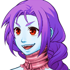
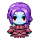

"My name is Avesty. I break hearts and I break necks... ...in that order." -Avesty, VS THE WORLD
Avesty is the adopted daughter of Ziza and a major antagonist in VS THE WORLD. She is a shape-shifter and uses her powers to manipulate people and to hurt them psychologically. She loves how she looks and often will flirt and flaunt with guys, and will demean and exploit insecurities out of other girls. She develops a rivalry with both Kendra and Melissa, and is a recurring boss character. Her favorite way of killing other people is to hug them, and to break their necks when they least expect it.
Avesty takes on many forms throughout the game, shape-shifting as Ethan, Melissa, Destyl, and others.
Biography
In VS THE WORLD
Prologue
Avesty originally appears in VS THE WORLD in the prologue, where she introduces herself and, along with Morado and Fireboss, threatens the people of Liberty Square to give up Ethan to them or to die. She initially gives Ethan a day where she promises not to kill him, humoring him, but not before flirting with him a bit and insulting some of the people around her.
Avesty's portrait from VS THE WORLD

Avesty's field sprite

Chapter 5
Spoiler Warning. Click button below to reveal spoilers
Avesty is the main antagonist of chapter 5, where you play as Melissa and Zoe. Melissa initially hears about Avesty's plan to disguise as the hero, and to ruin his reputation after Morado kills them. Avesty knows that Melissa heard this and tries to kill her, but Melissa escapes. Avesty eventually decides to disguise as Ethan to get Silva to take the Volcano Jewel from the Museum. While she is telling Silva about this plot, Melissa is about to confront who she thinks is Ethan, but Avesty takes her outside, ambushes her with an Ice Champion, and goes with Silva to get the Volcano Jewel. Avesty does this, but Melissa and Zoe catch up with her. Melissa demands to know who she is, and Avesty reveals that she is a shape-shifter and Ziza's daughter, and that she'll destroy the world with Fireboss.
Chapter 6
Spoiler Warning. Click button below to reveal spoilers
In Chapter 6, Avesty takes the Volcano Jewel to the top of Provo Mountain, where she gets Fireboss to ready Flame Armageddon, and destroy the world. She disguises as Zoe and gets Amanda to come with her, and tells the main characters that they need to turn back. Amanda blows her cover, so she breaks her neck and kills her. Avesty later disguises as Destyl, and tries to do the same thing again, but Melissa catches on and insults Avesty until she reveals her true self. Melissa says that Avesty is running away and is too cowardly to fight them, which throws Avesty into a rage and you fight her as Ethan, Steven, Kendra, Melissa, and Silva. When Avesty is defeated, she grabs Steven in a chokehold, telling Kendra she'll kill him unless she gives up. Kendra gets absolutely furious at this, and pushes Avesty to the side into a pool of lava, which permanently scars her forehead. Avesty swears revenge on Kendra after this, getting totally furious, and goes back to Ziza. Her scar will show up in all of her forms, making her shape-shifting now flawed.
On Avesty's return to Ziza, Ziza manipulates Avesty, telling her that because she scarred her forehead, she will be banished and no longer be her daughter. This crushes Avesty. Avesty believes that Ziza was the only one who could love her. This makes Avesty fly into an insatiable rage, and she goes back to Earth. She sees a couple, where she breaks the neck of the wife, telling the husband that she'll let him live so he can know what it's like to be miserable like she is. She starts to swear vengeance on Kendra and promises that she will pay for ruining her life.
Chapter 8
Spoiler Warning. Click button below to reveal spoilers
In Chapter 8, Avesty finds a defeated Kendra and takes her to the woods near Provo. There, Avesty disguises as Kendra's friends and psychologically abuses her, telling her how much her friends don't love her and exploiting her fears. Zoe takes Kendra away, and Avesty starts to search out for Kendra afterward.
Chapter 11
Spoiler Warning. Click button below to reveal spoilers
In Chapter 11, the heroes are on a plane to Ziza's base, and Avesty corners them there. Ultrastar is there too, and Avesty tries to kill them all, prompting Ultrastar to join forces with the heroes. In this fight with Avesty, Avesty is a lot more angry and has a lot less control of herself, even slitting her wrist to get her blood to corrode her enemies. The heroes knock Avesty off the plane, leaving her to fall to her death, but she shape-shifts into a giant monster for another attempt at killing them. They eventually defeat her again, and that big of a transformation messed up Avesty's skin even more, leaving more scars and even parts missing in her body.
In Destyl's flashback for chapter 11, you see Morado come up to Destyl, telling her that he wants to join her in her fight against Ziza. Destyl is reluctant at first, but eventually hugs her brother, what she wanted for some time. But then, Morado breaks her neck, and it is revealed that it was Avesty in disguise. Avesty sees Destyl as someone quite beautiful, and makes her normal form Destyl with a different color scheme and different clothes. After she murdered Destyl, Avesty is adopted as Ziza's daughter, and her recolor of Destyl is the "normal" form you see her during the game.
Chapter 12
Spoiler Warning. Click button below to reveal spoilers
In Chapter 12, Avesty follows Ethan, Silva, and Kendra into the Realm of Silence. She is able to open the portal because she can take Destyl's form and use her abilities. She disguises herself and follows them throughout the Realm, alone with the three and Destyl, psychologically torments them, and eventually ambushes them, completely consumed with anger and losing her sanity. She disguises herself as Kendra with Avesty's color scheme, telling Kendra that she'll ruin her life acting as her. Everyone defeats Avesty, who lays down on the floor, defeated. Kendra shows her mercy, and tells her that she believes that she can turn her life around and become a good guy. Avesty tells Kendra to give her a hug. Avesty then molts her hands around Kendra, and summons Melusa to petrify both of them. Melusa petrifies Kendra, but Melissa takes control a second and tells Avesty that she deserves death for her crimes, but Ziza for some reason will not let Melusa kill her.
Avesty is later found as one of Ziza's gargoyles, with her epithet being, "self-hatred".
During the credits, you can see someone with a scar on their head just like Avesty's, showing that Ziza unleashed her again on the world.
Personality
Avesty is dominated by her self-hatred. She believes that she is alone in the world, that no one will truly love her for who she is, and that it's not her fault that things are this way, blaming her neglectful parents, her peers growing up, and Kendra for ruining her life and making her unhappy. Because of this, Avesty is very sadistic, believing that because it's not her fault she's not happy, it's justice to ruin everyone else's life who is happy and has what she desires. She also really loves boys, and wants attention from them, often resulting in her disguising as someone else to get them to accept her and like her. She is very sensitive toward criticism, and often attacks people personally by enlarging their insecurities and fears. Avesty is also hard-working and a great actress, often studying throughly about the person she is impersonating. Although she is very violent and sadistic, she is not a sociopath, rather, does not know how to control herself and does feel bad for what she does, although she listens to her anger and hatred more than her guilt.
Relationships with others
Ziza
Avesty is very loyal to Ziza, and Ziza gives her whatever she wants, being a lot more loose with her than anyone else. She manipulates Avesty by telling her that "if you do ____, then I might love you", getting Avesty to do horrible things.
Morado
Morado secretly holds a lot of feelings of hatred for Avesty, because she murdered his best friend. Avesty thinks that Morado is very attractive, and tries to seduce him, which is actually pretty disturbing because she is disguising as his sister. Morado holds back a lot of anger toward Avesty and forces himself to work with her.
Kendra
Past Chapter 6, Avesty loathes Kendra, blaming her for ruining her life and for Ziza disowning her. Kendra feels bad for Avesty and wants her to change, while Avesty wants Kendra to suffer and to split her and Steven apart to make her unhappy.
Ultrastar
Ultrastar is Avesty's half brother, with them both sharing the same father. Avesty loathes Ultrastar, because he reminds her of her father who she murdered, who she both hates and feels guilty about killing. Avesty would emotionally abuse Ultrastar by telling him his father never loved him, and by telling him he would never be as strong as Ziza expected him to be. Ultrastar hates Avesty as a result, and eventually learned that Avesty killed his half sister on the other side, Destyl. Ultrastar decided to run away and vowed to destroy both Avesty and Ziza at that point. Ultrastar's hatred of Avesty is a driving force behind his obsession to be the hero, and Avesty still hates him, as seen when she tries to dig up his insecurities when disguised as Ethan.
Spoiler Warning. Click button below to reveal spoilers
Trivia
Avesty was designed to show the great damage self-hatred can do to yourself and others.
Avesty and Ultrastar share red eyes and blue faces, and they can both shape-shift, hinting to the fact that they are half-siblings.
Avesty was a character in a concept for a previous game I thought of called "Winter on the Continent", where she shares a lot of similarities with this Avesty, such as being a shape-shifter, hating herself, and liking to break necks.
Avesty has a journal where you can learn more about her backstory in Chapter 12.
Avesty's name is taken from the word "Travesty", which is a false or ridiculous portrayal of something.